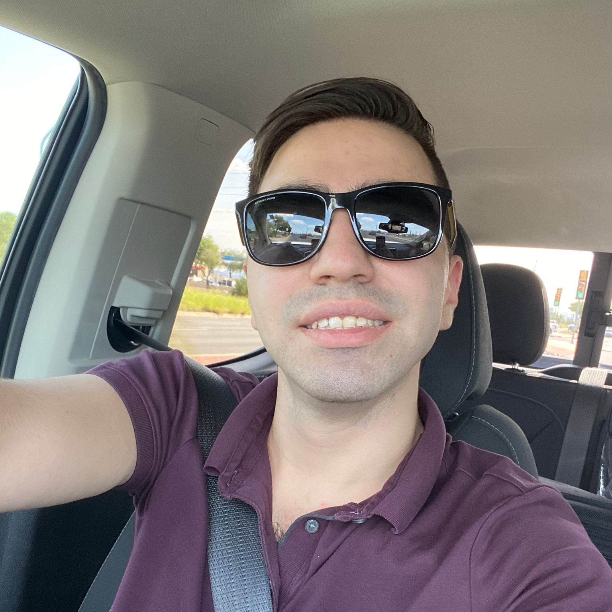
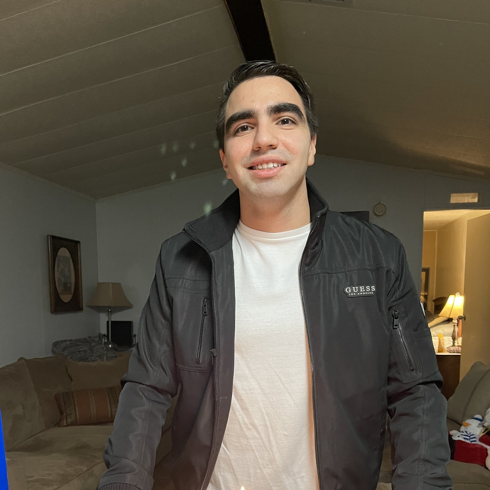
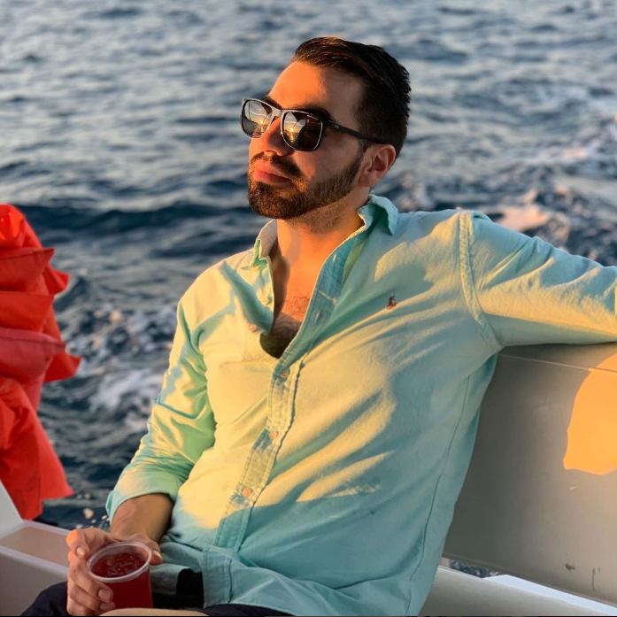
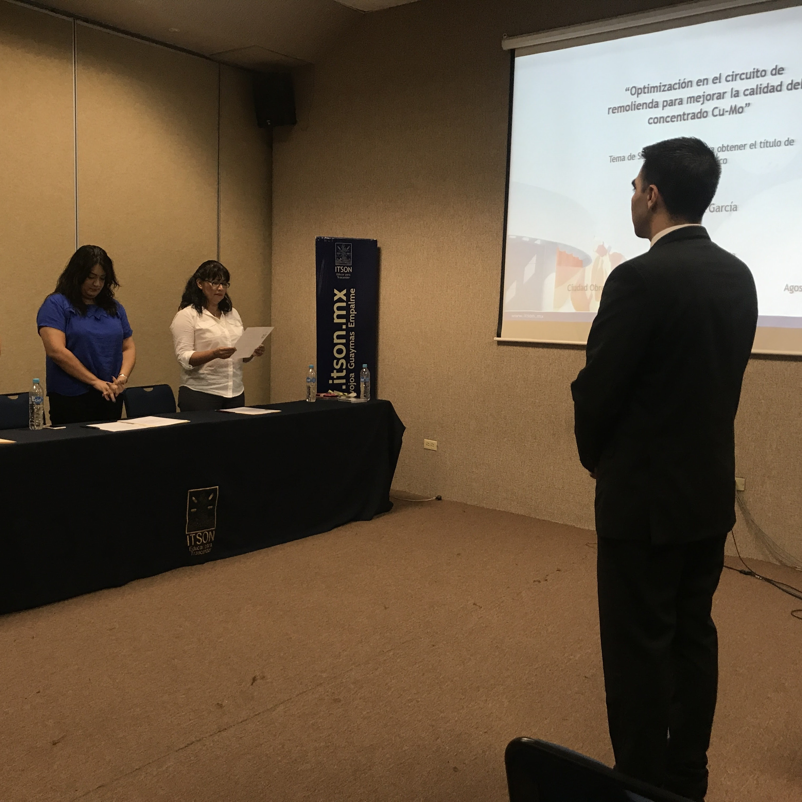

Goals
Christian's short-term goal is to focus on self-improvement, start exercising, improve his finances,
finish paying off his loans, improve his health and wellness, let go of negative thoughts, and focus
on the good ones. His medium-term goal is to become the Arizona regional manager for FoodCity Supermarket,
his current employer. His long-term goal is that his mining company in Mexico can provide him with a good
income and be recognized at the federal level.
|

Personal Accomplishments
Christian's accomplishments have been growing professionally to become a store manager quickly after
starting his current job; thanks to his team leadership and intelligence skills, he has been
recognized and excelled among all the employees. He founded a contracting company called EIM
(Especialistas Industriales de México), which focuses on working with large mining companies
such as Grupo México, with two other partners, being the investor of this company.
|

Embellishments
Being responsible with his tasks, objectives, and mistakes is one of his identifying characteristics. He
thinks about the consequences before acting, reflecting on the possibility of damage or harm to himself or
others if he acts in a certain way. He is an extrovert, finds energy and vitality in interacting with others,
and enjoys openly sharing his thoughts and emotions. They possess empathy, humility, patience, generosity,
respect, and, very importantly, emotional self-control. He does his best to overcome adversity and limitations
along the way.
|

Achievements
In 2017, he finished his university studies and obtained a bachelor's degree as a chemical engineer,
being one of the best students of his career. Months later, he decided to open his path and try new
things, so he moved to Texas to live away from his family with a college classmate and start from scratch
there. Doing this helped him grow personally and learn to be independent. Through these changes in his life,
he has adapted to new challenges and always looks out for his well-being, looking for ways to grow personally
and professionally.
|